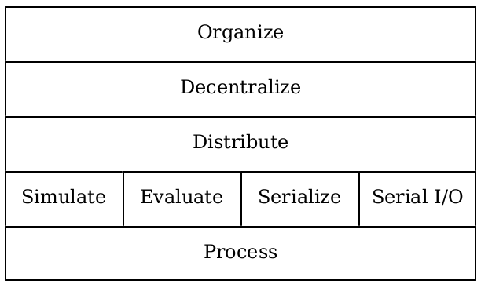

Eric Griffis <dedbox@gmail.com>
The neuron library is a framework for growing decentralized software organisms.

1 Process
1.1 Starting and Stopping Processes
1.2 Inter-Process Communication
1.3 Control Flow
1.4 Contracts
2 Serial I/O
3 Serialize
4 Evaluate
5 Simulate
6 Distribute
7 Decentralize
8 Organize